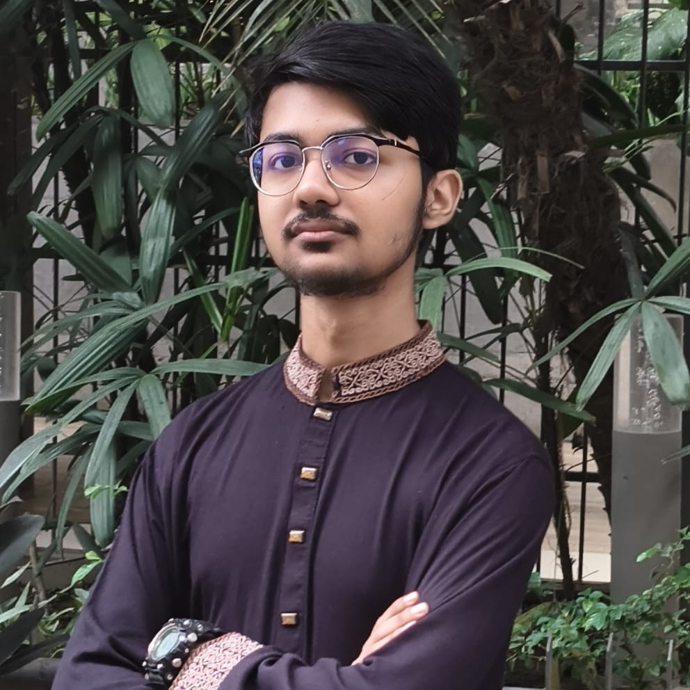

About

I'm eighteen, from Bangladesh, and honestly, I'm still figuring out what I want to specialize in. I don't think that's a bad thing, though. There are way too many things I'm curious about to pick just one this early.
So far, most of my time has gone into debate, research, and academic competitions. I've competed as a debater on a national television programme, made questions for many national English festival, judged competitive programming marathons, and taken part in differnt olympiads. I've also earned Scout awards. Basically, I've spent a lot of time competing, creating, judging, and probably overthinking things.
I'm especially interested in psychology, OSINT, literature, research, and writing. They all connect through my curiosity about people, information, and what makes something reliable.
For more details, visit the work page.